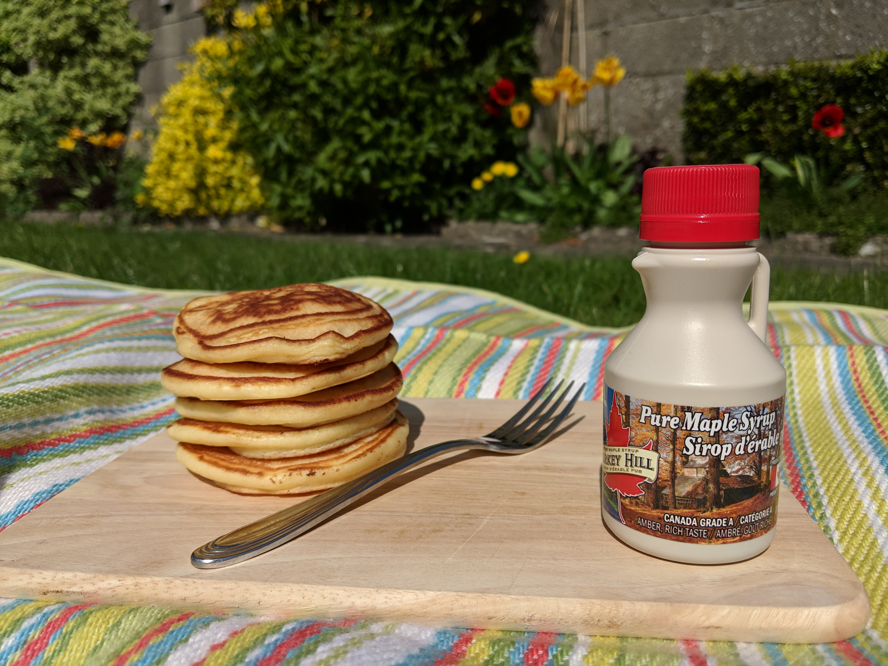

Drop-scone pancakes
Drop-scones, scotch pancakes, american pancakes. Call them what you will. I've gone through many iterations of this recipe to get to this stage. Happy with the end result. They're up there with the tastiest, fluffiest pancakes around.
Tips: Don't overmix! Separate yoke and egg! Melt butter and warm the milk a little.

Ingredients:
- 100g self raising flour
- 30g white sugar
- 1 teaspoon baking powder
- 145ml whole milk
- 1 large egg
- 35g butter (melted)
Method:
- Add all dry ingredients to a bowl
- Separate egg yolk and white
- Mix milk, butter and egg yolk
- Add wet ingredients to dry, stirring until just combined
- Stir in egg white
- Heat pan to medium heat
- Add tablespoon full of batter
- Once bubbles start forming on top, flip the pancake
- Cook for another 1 minute, until golden brown
- Serve warm!